The same reference can produce a different underwater motion
A feasible geometric plan still has to be executed. Currents, drag, actuator behavior, and vehicle–arm coupling change how an underwater robot responds. Tracking error can consume the clearance that made the plan feasible in the first place.
MANTA’s execution layer uses MC-PILCO model-based reinforcement learning to improve feedback from interaction data. The goal is to learn accurate tracking with a small number of trials, using a probabilistic model to evaluate candidate policies before the next interaction.

MANTA Planning decides which articulated motion is feasible. MANTA Control learns how the vehicle should respond to the active reference. The planning supervisor remains responsible for invalidating and repairing an obstructed route.
Tell the policy where to go and how the target is moving
The path is converted into a time-varying reference containing vehicle position, yaw, and desired body velocity. A phase index tells the controller which reference sample is active. Let $\eta=[x,y,z,\psi]^\top$ denote pose and $\nu=[u,v,w,r]^\top$ body velocity, with $r$ the yaw rate.
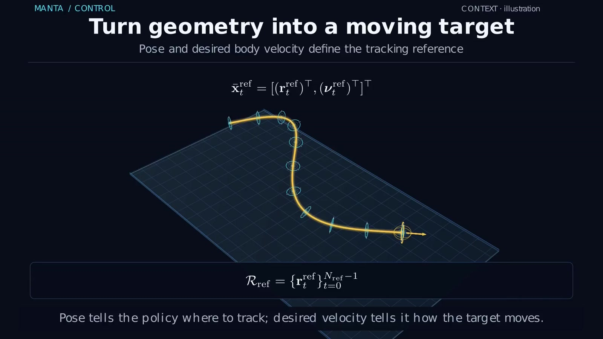
The neural policy receives 13 features: three normalized position-error components, sine and cosine of yaw error, four normalized velocity-error components, and four desired-velocity components. Sine and cosine avoid an artificial discontinuity at the yaw-angle wrap.
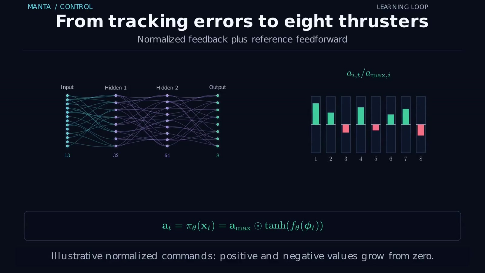
At execution time, the controller measures the state, forms these features, evaluates the policy, and sends the eight commands. The expensive GP rollouts are used during policy optimization.
Learn uncertain velocity changes; retain the known kinematics
An initial PD controller provides interaction data. Each transition records the local state and thruster command together with the observed change in body velocity. Four independent GP outputs learn the increments in surge, sway, heave, and yaw rate.
The model input $z_t$ contains the selected local-state variables, a continuous yaw representation, and the thruster command. The posterior mean predicts the velocity change; its uncertainty represents ambiguity left by the available transition data.
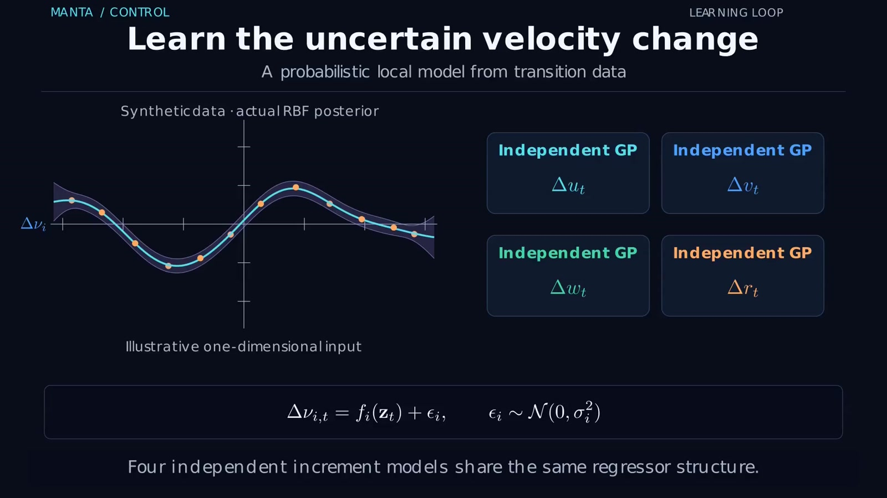
A particle samples a velocity increment and updates its body velocity. The known pose kinematics then reconstruct position and yaw using trapezoidal velocity integration. This preserves useful structure instead of asking a GP to learn the entire state update from scratch.
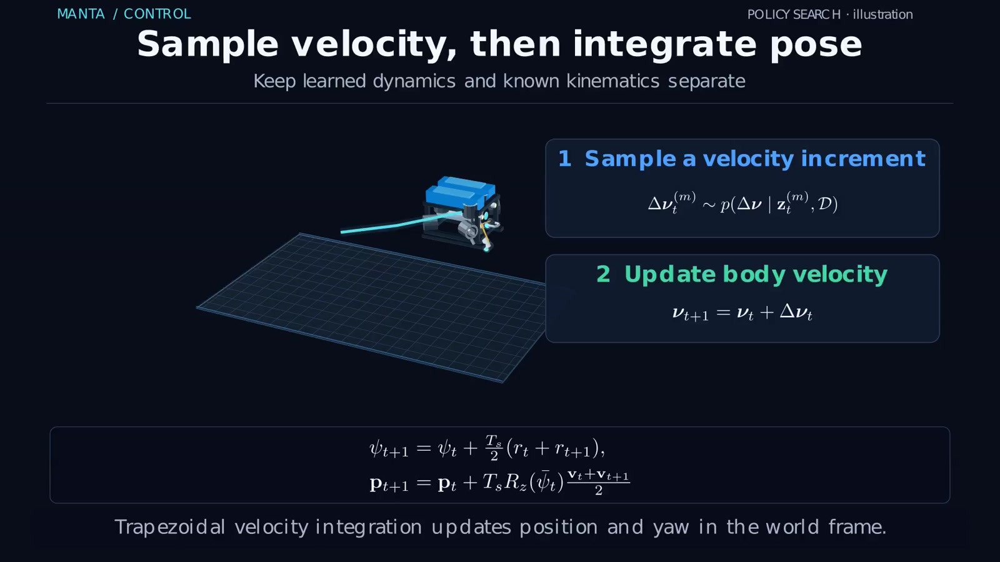
Give every reference segment its own particle cloud
During policy search, the reference is divided into ten pieces. A fresh particle cloud is initialized around the start state of each piece, then propagated over that local horizon using the shared policy and GP dynamics.
This makes later parts of the reference directly visible to the optimizer without requiring every particle to survive a single long prediction from the beginning. The clouds represent possible local executions, rather than physical vehicles or repeated measurements.
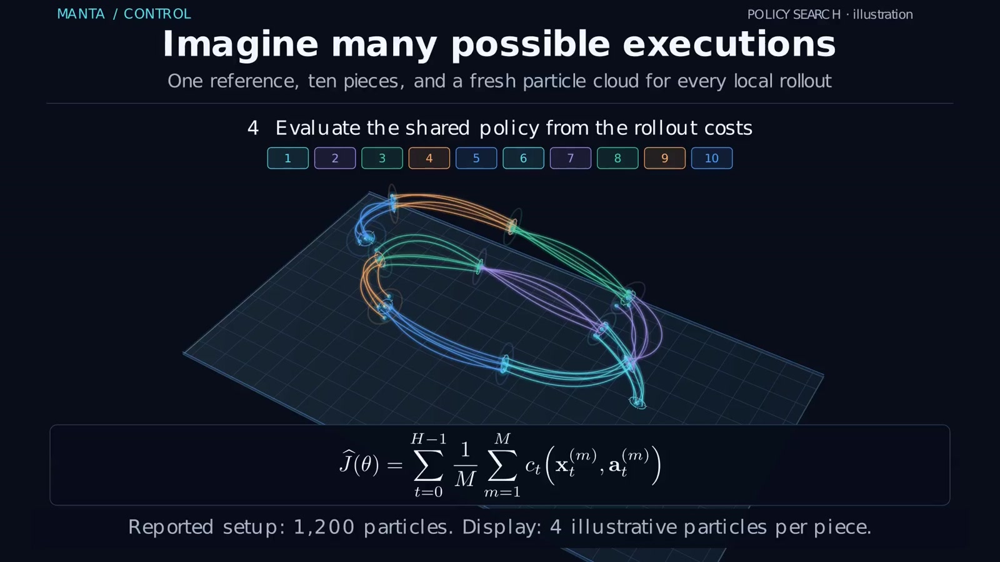
Here $S$ is the number of segments, $H_s$ the local horizon, and $M_s$ the particles used for that segment. All segments train the same feedback policy. The fitted GP is held fixed while gradients of the rollout cost update the policy parameters. Another interaction then supplies new transitions and the cycle repeats.
MC-PILCO provides the model-based policy-search framework used in this tracking study. The related P-MC-PILCO project explains how sparse, fixed-function rollouts reduce the computation required for policy search.
Accuracy, effort, and smooth commands have different roles
The cost penalizes position, depth, yaw, and velocity errors, together with normalized command magnitude and command-to-command variation. Tracking terms pull the vehicle toward the reference; the input terms discourage excessive or rapidly changing commands.
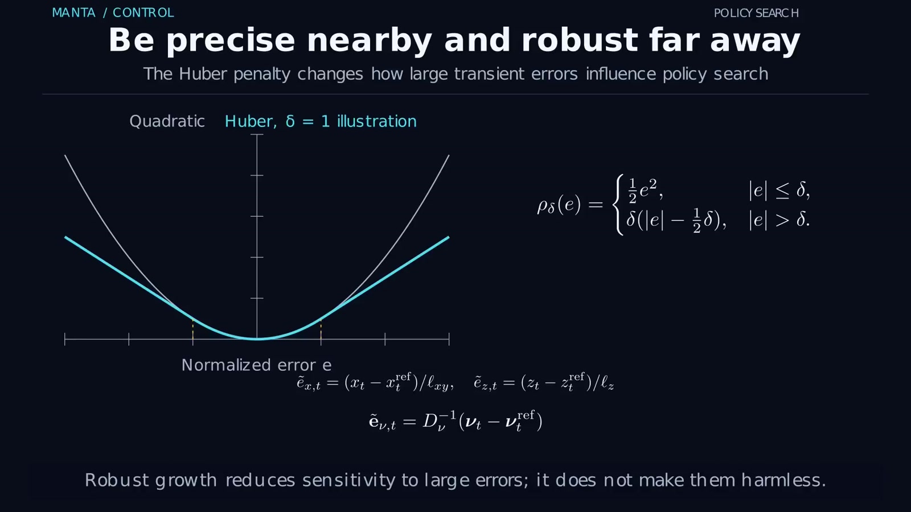
That choice supports precise local tracking without letting a few large errors dominate the objective. It does not make large deviations acceptable, provide a collision guarantee, or guarantee monotonic improvement from one learning trial to the next.
Six learning trials improve the training-reference tracking
The reported control evaluation uses ROS 2–Gazebo simulation of the BlueROV tracking layer: PD exploration followed by six learning trials, 50 Hz control, 30-second rollouts, and eight bounded thruster commands. These results concern vehicle tracking; they are not a physical UVMS hardware experiment.
| Controller | Position RMSE | Yaw RMSE |
|---|---|---|
| PD | 0.329 m | 0.209 rad |
| Learning trial 1 | 0.404 m | 0.582 rad |
| Learning trial 6 | 0.065 m | 0.046 rad |
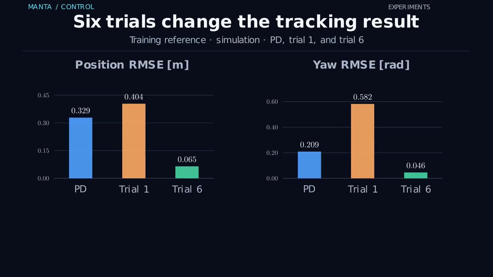
The time histories explain more than the final errors alone. Early learning produces substantial transients, while the final policy reduces the persistent depth bias seen under PD. That matters because vertical error consumes clearance throughout the trajectory.
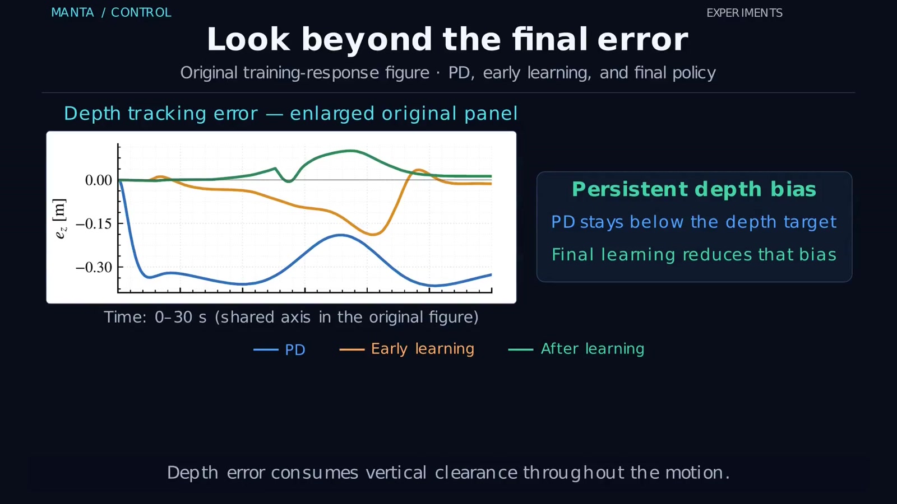
Change the reference and keep the learned policy fixed
The final policy is tested without additional learning on 40 unseen references: ten each from an S-curve, gentle tube, vertical tube, and helix family. The test examines transfer to related geometries rather than arbitrary underwater tasks.
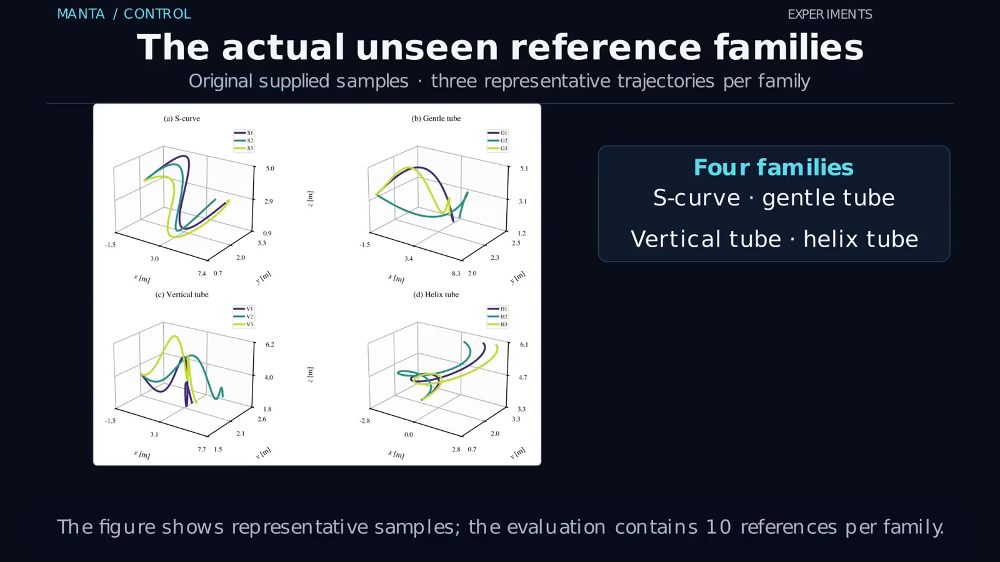
| Family | Lower position RMSE | Lower yaw RMSE | Lower peak position error |
|---|---|---|---|
| S-curve | 10 / 10 | 10 / 10 | 10 / 10 |
| Gentle tube | 10 / 10 | 5 / 10 | 10 / 10 |
| Vertical tube | 10 / 10 | 5 / 10 | 10 / 10 |
| Helix | 10 / 10 | 10 / 10 | 10 / 10 |
| Total | 40 / 40 | 30 / 40 | 40 / 40 |
The learned policy improves position RMSE and peak position error in every paired comparison. Yaw improvement is less uniform, especially for the two tube families. These are improvement counts across the reported references, not confidence intervals or statistical significance tests.
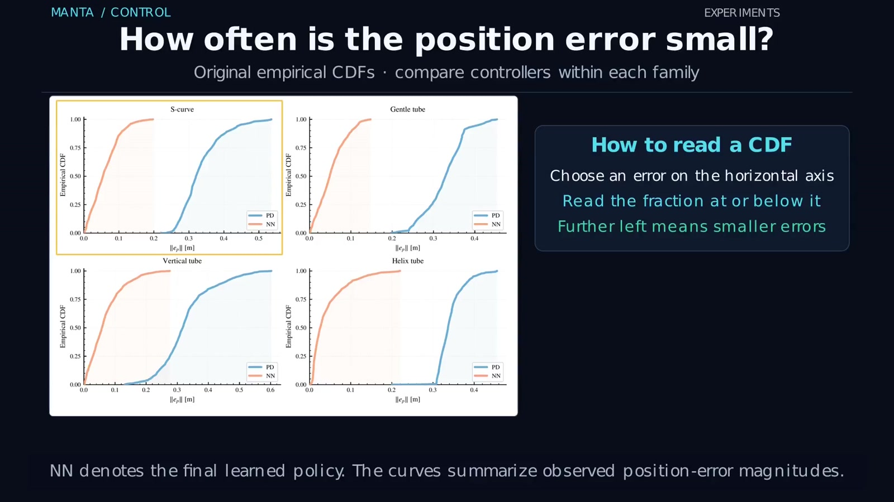
Track the active reference; yield when the plan becomes invalid
Learning improves how the vehicle follows a reference, while the supervisor checks whether that reference remains executable. If a map update invalidates the remaining motion, hold-and-repair takes over before tracking resumes on a revised plan.
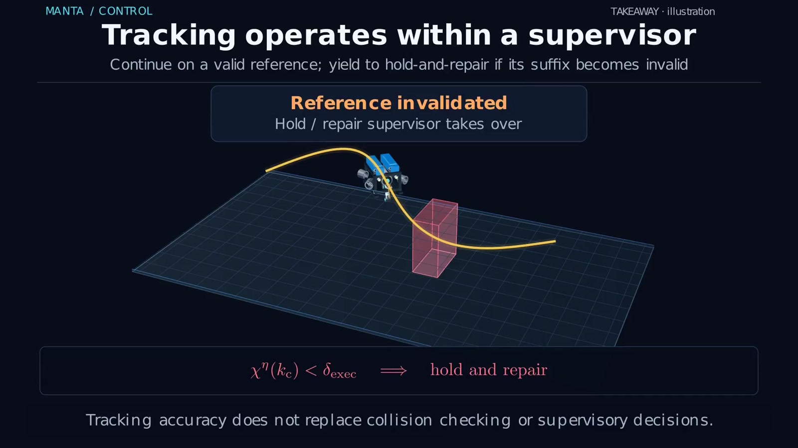
Together, the two MANTA projects connect task-aware geometry with data-efficient feedback. Read MANTA Planning for passage selection, terminal repair, and recovery through stored route alternatives.